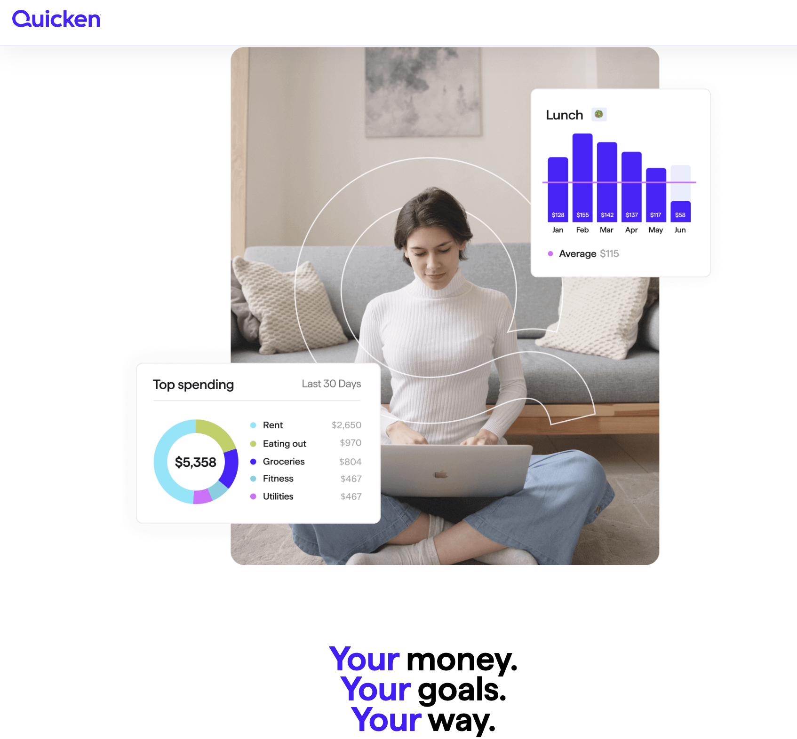

Projects
-
Caffeine Tracker Mobile App
Swift, SwiftUI, UIKit
Employed SwiftUI for creating a modern and responsive user interface, enhancing user engagement through sleek and intuitive design elements.
Utilized UIKit components to implement custom functionalities that were beyond the scope of SwiftUI, ensuring a robust and versatile user experience.
Integrated Core Data for efficient data management and persistence, allowing users to track their caffeine intake over extended periods.
View Project -
Quicken User Interface Feature
Objective-C, Cocoa
Implemented a column resizing feature in Quicken Mac with Objective-C and .xib files allowing users to customize their view, enhancing user experience across different screen sizes.
Tracked and fixed issues stemming from the development of the new feature allowing for an understanding of large apps while gaining insights into complex app management.
View Project -
Food Truck Form
HTML, CSS, Javascript, PHP, SQL
Designed a user interface with HTML and CSS to create an aesthetic website page.
Built a string of forms using PHP to simulate ordering food and selecting menu options.
Integrated SQL with PHP to create, read, update, and delete data from a database.
View Project
Work Experience
-

Software Developer Intern

Menlo Park, CA
Collaborated with a talented team to design and implement user-friendly features within the Quicken application such as providing the user with the ability to provide feedback to the development team.
Leveraged Objective-C to write clean and efficient code, ensuring seamless integration of new features, including a resizing column feature, while maintaining the application's performance.
Skillfully utilized .xib files for creating and modifying user interfaces and creating an intuitive and visually appealing user experience.
Participated in code reviews and worked closely with senior developers to continuously improve code quality and best practices.
May
2023
Aug
2023
-
Digital Audio Visual Associate
Austin, TX
Troubleshoot audiovisual equipment such as computers, speakers, projectors, and touch panels in lecture halls, classrooms, and event spaces, ensuring high-quality sound and visual experiences.
Conduct regular AV equipment maintenance and upgrades, including projectors, microphones, speakers, and digital interfaces, to ensure optimal performance and longevity.
Respond promptly to AV-related issues and service requests, delivering solutions promptly and professionally.
Aug
2022
Dec
2023

Education
-
St. Edward's University
Austin, TX
-
Bachelor of Science in Computer Science
-
Minor in Business Administration
-
GPA 3.97
-
Dean's List, 5 Semesters
May
2025
-
Coursework
-
Software Engineering
-
Research in Computer Science
-
Mobile Programming
-
Web Development
-
Programming Languages
-
Computer Networks
-
Algorithms and Data Structures
-
Component-Based Programming
-
Intro to Algorithmic Problem Solving
-
Intro to Computer Organization and Architecture
Skills
-
Python
-
Swift
-
SwiftUI
-
UIKit
-
Objective-C
-
Cocoa (API)
-
Xcode
-
Java
-
C
-
HTML
-
CSS
-
Javascript
-
PHP
-
SQL
-
Assembly (NASM)
-
Bash
-
Git
-
GitHub
-
BitBucket
-
Jira
-
Sourcetree
-
Vim
-
MacOS